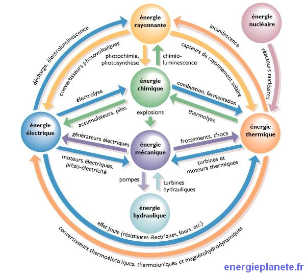

Comme vous avez pu le constater dans l'article consacré aux formes d'énergie, cette dernière existe sous de très nombreux aspects. Pour passer de l'un à l'autre, il va falloir avoir recours à une conversion d'énergie. Par exemple, pour passer d'une énergie chimique à une énergie thermique, la conversion d'énergie en question n'est autre que la combustion. Ou encore, pour passer d'une énergie thermique à une énergie lumineuse (de rayonnement), on parlera -par exemple- d'incandescence.
Dans cette partie, nous faisons le point sur les types de conversion d'énergie. Nous avons choisi de présenter ces types en fonction des énergies impliquées dans les conversions. Pour vous repérer, voici un graphe récapitulant les formes d'énergie, et des exemples de conversions :

Toutes les conversions ne sont pas encore disponibles. La base de donnée se remplira petit à petit.
Energie chimique -> Energie rayonnante
Energie chimique -> Energie mécanique
Energie chimique -> Energie électrique
L'oxydo-réduction
Energie chimique -> Energie thermique
La combustion
Energie mécanique -> Energie thermique
Les frottements
Energie mécanique -> Energie chimique
Energie mécanique -> Energie hydraulique
Le pompage
Energie mécanique -> Energie électrique
Energie électrique -> Energie thermique
L'effet Joule
Energie électrique -> Energie chimique
Energie électrique -> Energie rayonnante
Energie électrique -> Energie mécanique
Energie thermique -> Energie électrique
L'effet Seebeck
La turbine à vapeur et l'alternateur (indirect)
Energie thermique -> Energie chimique
Energie thermique -> Energie rayonnante
Incandescence
Rayonnement infrarouge
Energie thermique -> Energie mécanique
Energie rayonnante -> Energie électrique
L'effet photovoltaïque
Energie rayonnante -> Energie chimique
Energie rayonnante -> Energie thermique
L'absorption
Energie hydraulique -> Energie mécanique
Energie nucléaire -> Energie thermique